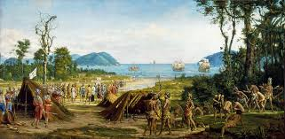

Histórias do Rio Antigo
Período Pré-Cabralino
Por volta do ano 1000, a maior parte do atual litoral brasileiro, incluindo o território da atual cidade do
Rio de Janeiro, foi invadida por povos tupis procedentes da Amazônia.
Curiosidades: Os tapuias eram os habitantes do litoral da cidade do Rio de Janeiro.
No início do século XVI, o território da cidade do Rio de Janeiro era ocupado na sua maior parte pela tribo
tupi dos tupinambás, também chamados tamoios.
Uma das inúmeras aldeias tupinambás no território da atual cidade do Rio de Janeiro era a aldeia Carioca,
cujo nome viria a se tornar, posteriormente, o gentílico da cidade.
Período Colonial

A Baía de Guanabara, que banha a cidade do Rio de Janeiro, foi descoberta pelos portugueses em 1º de janeiro
de 1502, durante a viagem do florentino Américo Vespúcio de reconhecimento da costa da América Portuguesa.
Curiosidades: França Antártica, tentativa de colonização francesa no interior da Baía de Guanabara.
A cidade de "São Sebastião do Rio de Janeiro" foi fundado por Estácio de Sá em 1° de março de 1565, quando
desembarcou num istmo entre o Morro Cara de Cão e o Morro do Pão de Açúcar, erguendo uma paliçada defensiva.
Período Imperial
Após a Independência do Brasil em 1822, a cidade continuou como capital do país, enquanto a província do Rio de Janeiro enriqueceu com a agricultura canavieira da região de Campos e, principalmente, com o novo cultivo do café no Vale do Paraíba. Curiosidades: O Corpo de Bombeiros foi criado em 1855. De modo a separar a província da capital do Império, a cidade foi compreendida, no ano de 1834, no Município Neutro, passando a Província do Rio de Janeiro a ter Niterói como capital.
Período republicano
Em 27 de outubro de 1912, foi inaugurado o primeiro trecho do caminho aéreo do Pão de Açúcar, entre a Praia
Vermelha e o Morro da Urca.
O chamado "bondinho do Pão de Açúcar" se tornaria um dos grandes símbolos da cidade.
Curiosidades: A estátua do Cristo Redentor foi inaugurada em 12 de agosto de 1931.
Em 1960, após a transferência da capital federal para Brasília, o antigo Distrito Federal, onde se
situava a cidade do Rio de Janeiro, se tornou o estado da Guanabara.